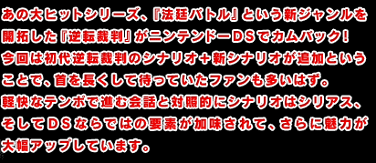
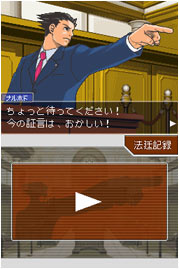
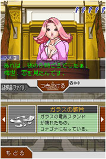
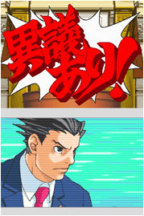
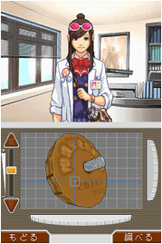

普通の生活を送る一般市民には、あまり馴染みのない『裁判所・弁護士・検事』といった単語。
ある種の異世界である"法廷"が舞台のドラマを、スムーズにそして大きく楽しめてしまうのが『逆転裁判』です。
殺人事件が起こり、それを弁護士・成歩堂龍一(なるほどうりゅういち/なるほどくん)が究明し、ライバル検事と闘い、真犯人を追いつめていくというのが本編の流れ。
毎回、無実の罪で投獄された人から弁護を依頼され(または買って出て)、得意のハッタリと逆転の発想で事件を解決へと導きます。
弁護士ってこうなの？ 裁判ってこれでいいのか？ と思ってしまうほど、シナリオとキャラクターに味がありますが、事件内容は骨太で非常に複雑。
必ず真犯人はどこかに存在するので、真相が暴かれるまでキャラクターと一緒に法廷を闘うことになります。
シナリオを進める毎に難易度が増し、何度もなるほどくんと一緒に事件を整理し、考え、発想を逆転させないと先へ進めません。
今回の追加シナリオである第五話では、第四話でエンディングを迎えた後のストーリー。
とある殺人事件を軸に、ライバル検事の御剣やサイバンカン、新キャラクター・茜たちとのドラマが始まります。
|


|

今回の第五話では、これまでになかった新要素がいくつか盛り込まれています。
３Ｄ表現を使ったタッチペンによる詳細なアイテム解析、ルミノール試薬による捜査、マイクを使った「異議あり！」など、ＤＳだからこそできる遊び方が加えられていて、『逆転裁判ワールド』に本格的な味が加えられています。
もともとシンプルな操作性のシリーズですが、要素が増えてもそこは変わらず。テンポよくシナリオが進められました。
それからシナリオのボリュームが多い！ 第四話までをクリアーして、それまでのノリでスタートすると面食らうはずです。
ということは、長く楽しめるということでもあります。
シリーズファンやアドベンチャー好きな人だけでなく、子供さんから大人の方まで広く遊んで欲しい、本格的な法廷バトルです。ぜひ。
|


|
|